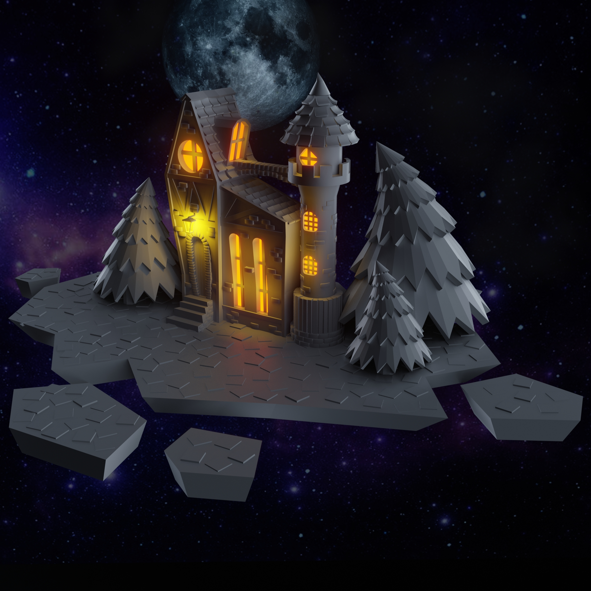

Поговорим о моих наработках.
Хоть я не так уж и многое сделал, но мне есть о чём рассказать
Сейчас я делаю на нём свою курсовую по теме:
"Разработка интерфейса пользователя для программы расчёта свойств открытых резонаторов гиротрона"
Очень увлекательно!
Как я уже говорил, мой научный руководитель очень крутой дядька.
Я очеь рад, что работрая с ним, я могу делать то, что мне нравится, а именно программировать.
При этом моя работа будет кому-то нужной и полезной.
Я буквально работаю над тем, что упрощаю работу множесту людей из сферы учёных.
Так же мои работы из сферы 3D моделирования, которые я могу показать.

Вы можете следить за моими достижениями в instagram